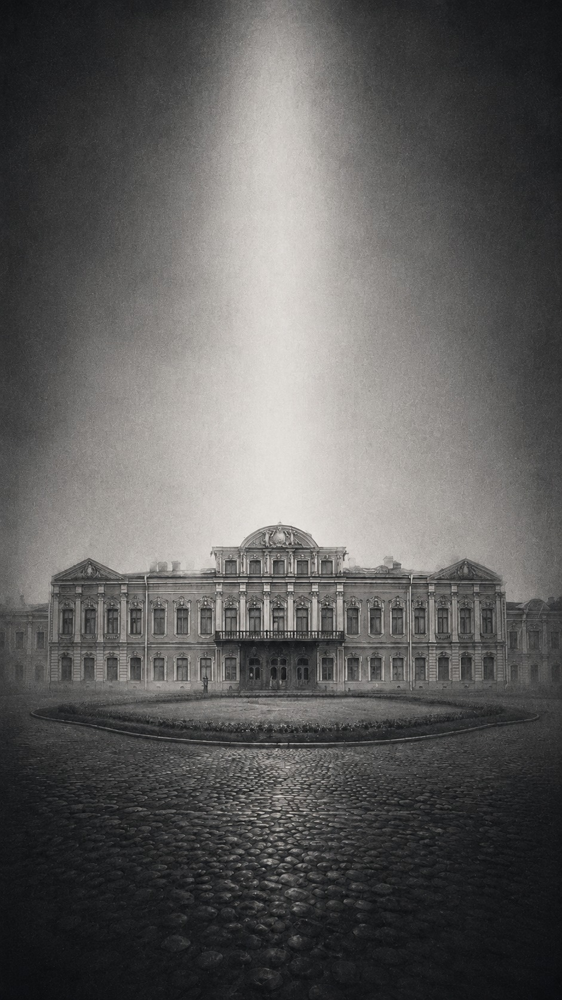
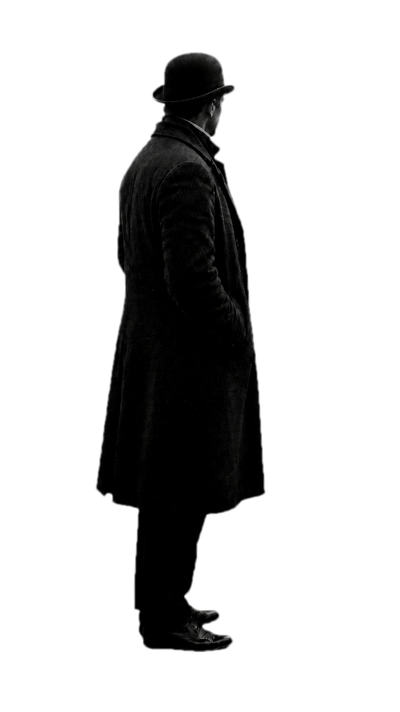
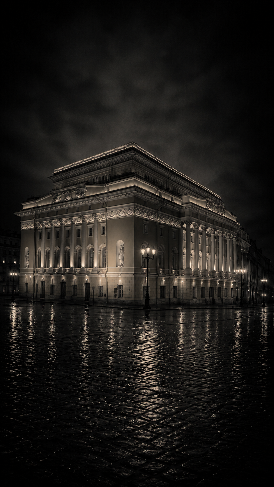
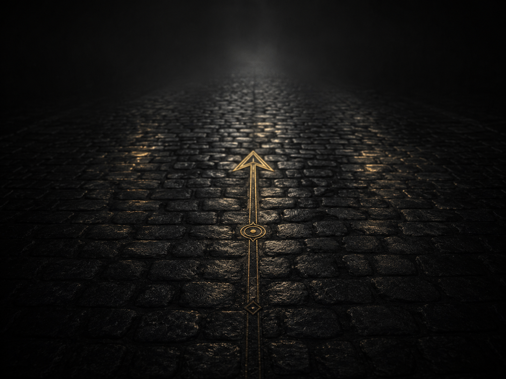

Город
музыки
и театров
Откройте Петербург как сцену, на которой оживает история музыки и театра. Прогулки, факты и голоса артистов и композиторов — в одном приложении.


Пролог
Этот проект приглашает вас стать собеседником Петербурга. Наш город хранит следы встреч, разногласий, дружбы, учительства и художественного риска.
Четыре маршрута проведут вас по разным линиям театральной, музыкальной и культурной памяти города.
Как устроена прогулка
У каждого маршрута свои цвет, ритм и оптика. Сделав город собеседником, мы предлагаем вам прогуляться по нему, погружаясь в истории, которые он хранит.
Точки на карте открываются как сцены спектакля: вы будете находиться между тем, что было, и тем, что могло быть.
Вы сможете читать и слушать, повторяя путь наших героев. В рамках одной сессии приложение запоминает, в каких точках вы были, какие просмотрели, а что ещё впереди.

Выбрать маршрут
1. Музей-квартира Римского-Корсакова → Театральный музей
Маршрут о творческом взаимопонимании, раннем узнавании таланта и прогулке, в которой разговор продолжается на ходу.
Карта маршрута
1. Музей-квартира Римского-Корсакова → Театральный музей
Черновик карты маршрута. Сейчас это единая карта с четырьмя стартовыми точками; дальше сюда можно подставить четыре отдельно размеченные карты.